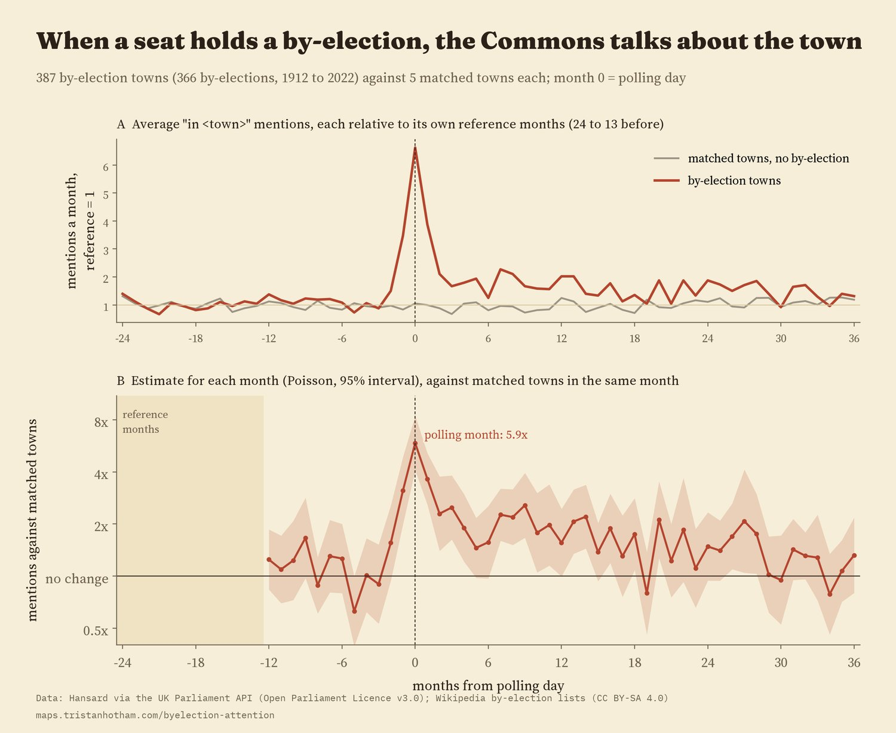
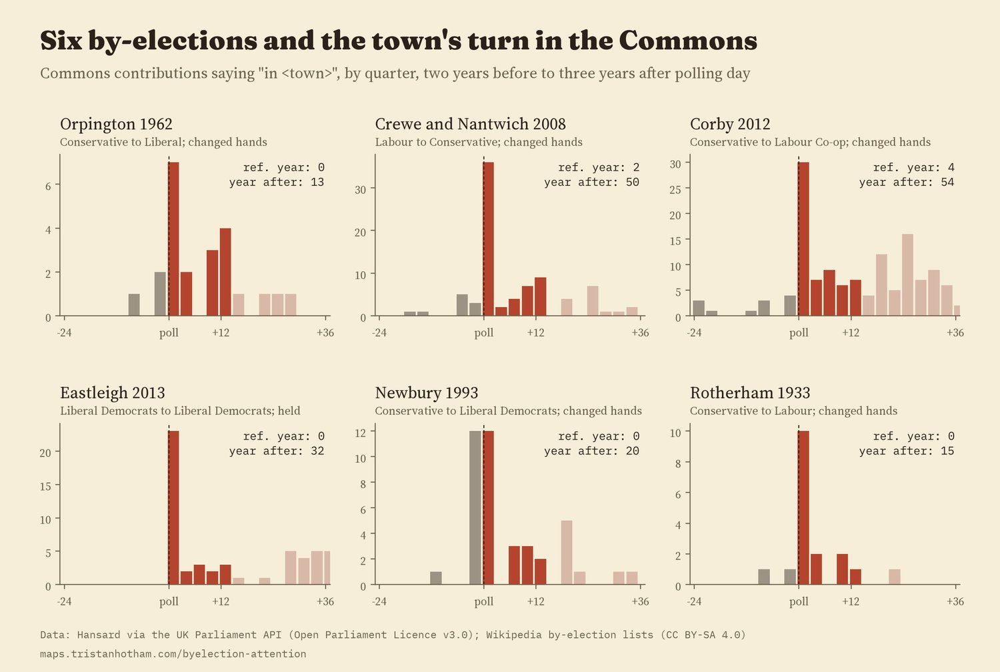
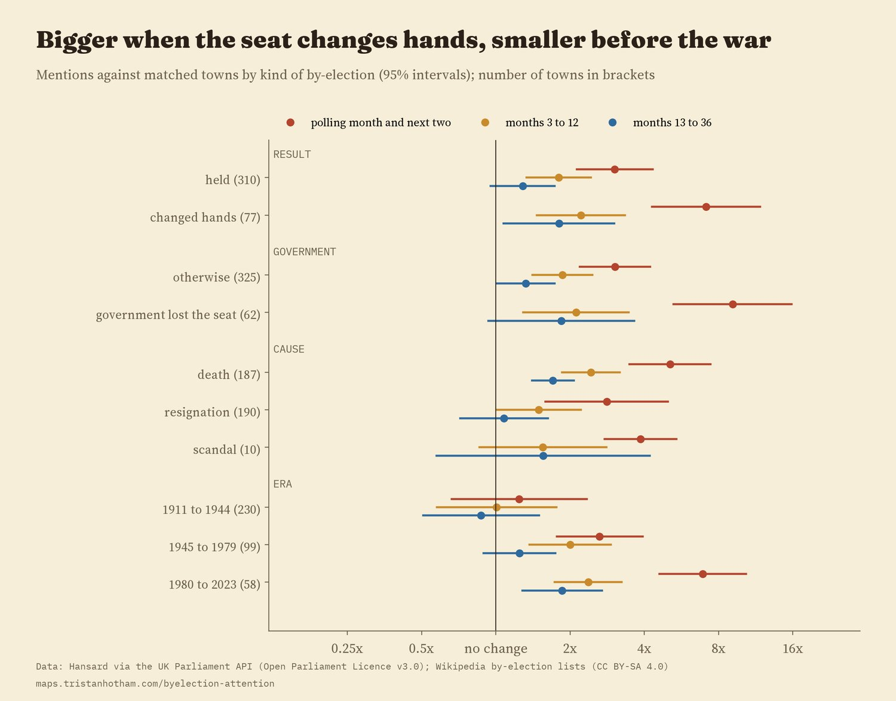
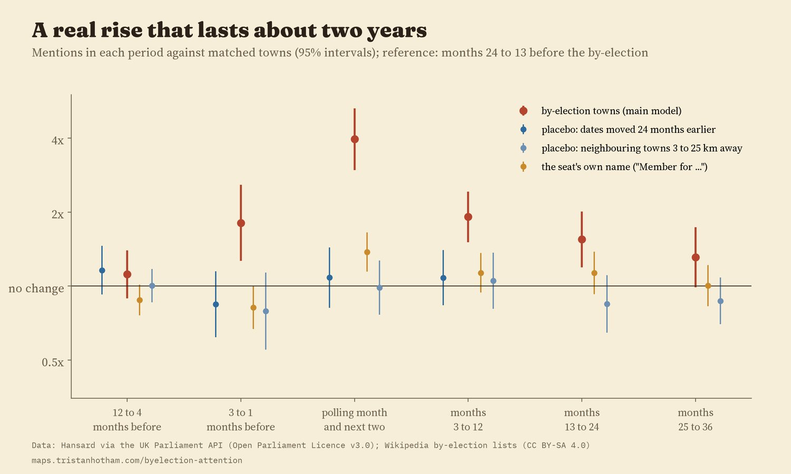
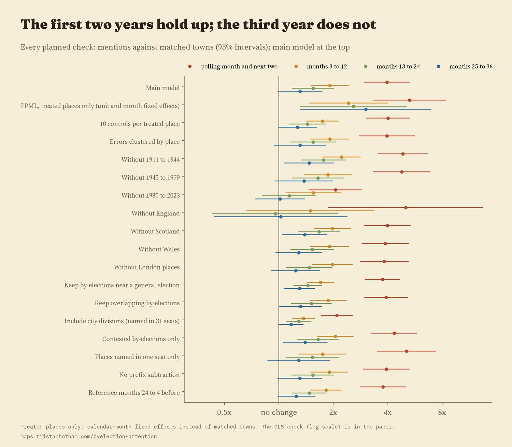

Every UK by-election since 1909 whose seat is named after a town. For the 387 towns in the analysis, colour shows how Commons mentions of "in" the town changed in the year after polling day, against similar towns with no by-election. Drag the timeline; tap a dot.
A by-election is a small earthquake in one place. A member dies or resigns, the parties pour in, the national papers arrive, and for a few weeks a town most people never think about is on the news. But does Parliament itself pay more attention to the place afterwards? I took every UK by-election since 1909 from the Wikipedia lists (1,339 of them), found the 957 whose seat is named after a town I can count in Hansard, and, for the 366 that pass the checks below, followed how often MPs said "in" that town, month by month, for two years before and three years after polling day.
Before a by-election, the 387 towns in the analysis were mentioned "in" the Commons about 0.12 times a month on average, roughly 1.5 times a year. In the month of polling that jumps to 0.82. Compared with five similar towns each, chosen for a similar level of mentions beforehand and a similar population, with no by-election of their own, a by-election town was mentioned 4.0 times as often in the polling month and the two after (95% interval 196% to 429% more). The rise starts in the three months before polling, when the seat is empty and the campaign is on (1.8 times).

Top: average mentions, each against its own earlier level. Bottom: the monthly estimate against matched towns.
The attention does outlast the campaign. Three to twelve months after polling, by-election towns were still mentioned 1.9 times as often as their matched towns (95% interval 51% to 143% more), and in the second year 1.6 times (19% to 101%). By the third year the gap is 1.3 times, with an interval that includes no change, and it is significant in only 7 of the 18 checks I ran. A new member who says the town's name in the chamber is a likely part of the story, but the data count speeches, not speakers, so I cannot tell how much.

Six by-elections, by quarter. Orpington went from 0 mentions in the reference year to 13 in the year after; Crewe from 2 to 50.
A by-election that changes the seat's party is a bigger event, and the Commons notices: in the polling month and the two after, towns whose seat changed hands were mentioned 7.1 times as often as their matched towns, against 3.0 times where the seat was held, a difference of 2.3 times (95% interval 27% to 335% more). Where the government lost the seat the jump was 9.1 times, against 3.0 times for all other by-elections. But the difference does not last: three to twelve months on, towns whose seat changed hands were at 2.2 times and held seats at 1.8 times, a gap the data cannot tell apart from none. Whether the seat had been held by the government or the opposition made no clear difference.
Deaths and resignations differ too. After a member's death, the town's extra attention was larger and lasted longer (2.43 times in months 3 to 12) than after a resignation (1.49 times). Scandals are too few (10 towns) to say much.

Estimates with 95% intervals for three periods after polling day, by kind of by-election.
The clearest surprise is time. For the 230 towns with by-elections from 1911 to 1944 there is no detectable rise (1.2 times at the result, an interval that includes no change). From 1945 to 1979 the jump is 2.6 times, and from 1980 to 2023 it is 6.9 times. One reading is that MPs talk about their own patch far more than they used to, which is what studies of the constituency role of MPs describe. Another is that the way debates were recorded and indexed changed. This data cannot separate the two.
I moved every by-election two years earlier and ran the same analysis: nothing (1.08 times at the false polling date). I took neighbouring towns three to 25 km away that were not in the seat's name: nothing either (0.99 times). The seat's own name, which rises mechanically when a new member is introduced as "the hon. Member for ...", rose only 1.38 times and only around polling day, so the main result is not that formula. Across 18 other checks (other models, more controls, leaving out each era, nation or London, keeping by-elections near general elections) the first-year rise held every time but one, which left out England and kept only 3,760 rows.

The main estimate against placebos and the seat's own name.

Every planned check.
By-elections. I parsed the six Wikipedia lists of UK by-elections from 1900 to today: seat, date, the outgoing and incoming member and party, whether the seat changed hands, and the cause. 69.8% of the by-elections since 1909 also have a Wikidata entry, with the same date in 98.3% of those.
Towns. The Commons counts come from Hansard's search, month by month: contributions saying "in" plus the town's name, for 957 by-elections whose seat name contains one of 1,661 UK town names that I counted for an earlier study. Ambiguous names (Newport, Durham, Boston) are left out. I also left out by-elections within a year of a general election, towns with another by-election within the five-year window, towns split between three or more seats (Glasgow, Birmingham), and members re-elected after taking office, which leaves 387 towns.
The comparison. Each town is compared with five others from the same nation, more than 25 km away, with no by-election of their own, and with similar mentions and population beforehand. I wrote the analysis plan down before running any model, and the main model is a Poisson regression with each town compared to its own matched towns month by month, uncertainty clustered by by-election.
What this cannot say. By-elections are not random: a death, a resignation or a scandal is itself news, so this measures the whole episode, from vacancy to new member, not the vote alone. "In" plus the name is a sample of mentions; county seats count only through the towns in their names; and I do not know who spoke. Each single by-election on the map is noisy, with few mentions either side.